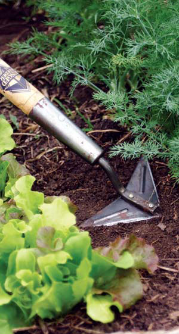

SCOTT HOLLIS
Once your crop is up, use a cultivating tool to control weeds in your garden. This Winged Weeder makes easy work of turning up the soil. Just be sure to get weeds out when they’re small.